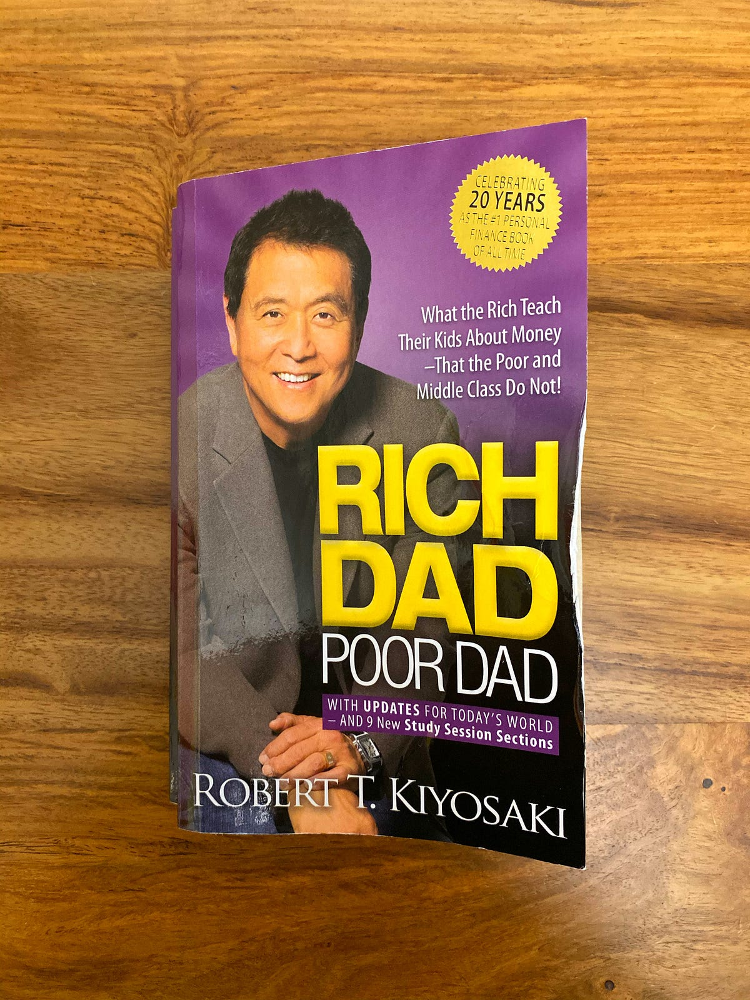
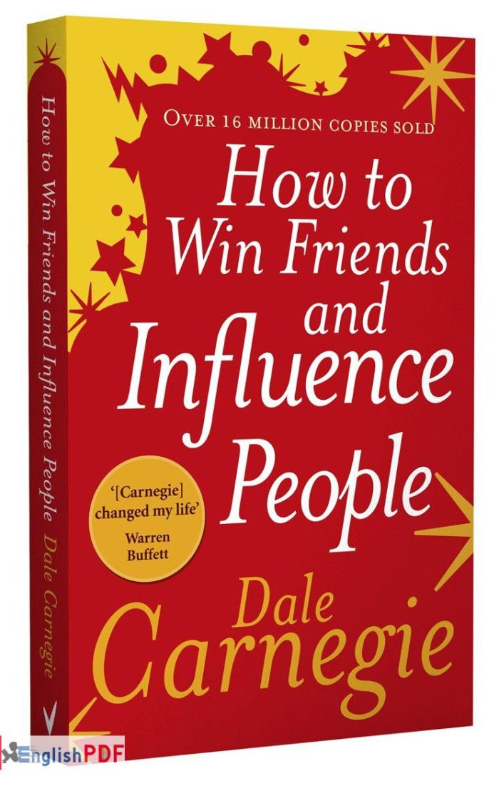
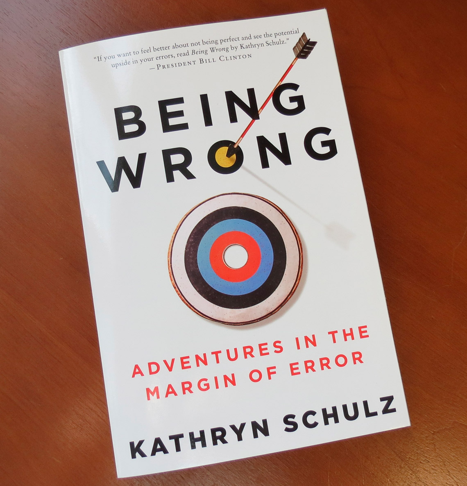

Deep Work: Rules for Focused Success in a Distracted World Nonfiction | Book | Adult | Published in 2016 A modern alternative to SparkNotes and CliffsNotes, SuperSummary offers high-quality Study Guides with detailed chapter summaries and analysis of major themes, characters, and more.

Rich Dad Poor Dad is Robert's story of growing up with two dads — his real father and the father of his best friend, his "rich dad" — and the ways in which both men shaped his thoughts about money and investing. The book explodes the myth that you need to earn a high income to be rich and explains the difference between working for money and having your money work for you.

The 48 Laws of Power (1998) is a self-help book by American author Robert Greene. The book is a New York Times bestseller, selling over 1.2 million copies in the United States.
Atomic Habits, my #1 New York Times bestselling book. Packed with self-improvement strategies, Atomic Habits will teach you how to make the small changes that will transform your habits

How to Win Friends and Influence People is a 1936 self-help book written by Dale Carnegie. Over 30 million copies have been sold worldwide, making it one of the best-selling books of all time
.jpeg)
Big Magic is one of the most honest discussions about the creative process that I’ve ever read. Gilbert strikes a playful and conversational tone, but make no mistake, this is all straight talk.
.jpeg)
Think Like A Freak, they offer a blueprint for an entirely new way to solve problems, whether your interest lies in minor life hacks or major global reforms.
.jpeg)
Thinking, Fast and Slow is a 2011 popular science book by psychologist Daniel Kahneman. The book's main thesis is a differentiation between two modes of thought: "System 1" is fast, instinctive and emotional; "System 2" is slower, more deliberative, and more logical.

Good to Great is the product of a five-year research project, led by Jim Collins and executed by a team of 20 people, in response to a central question.

This book is about the opposite of all that. It is about being wrong: about how we as a culture think about error, and how we as individuals cope when our convictions collapse out from under us.